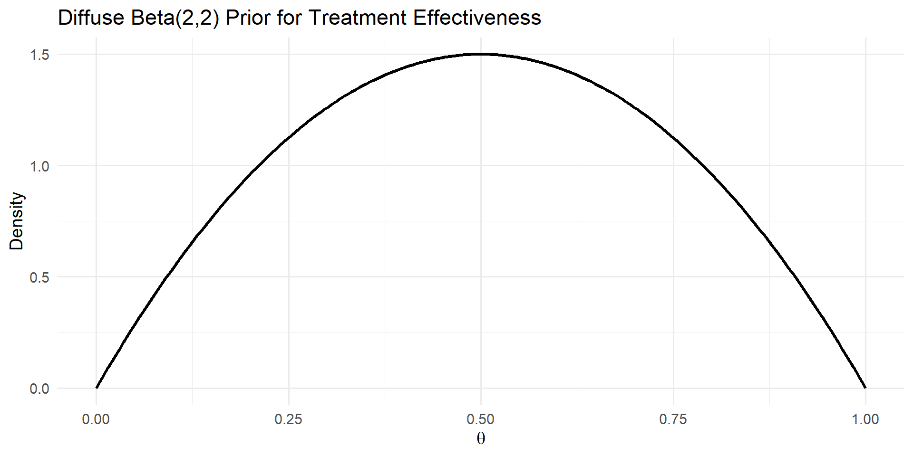
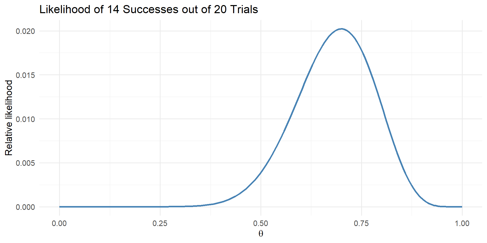
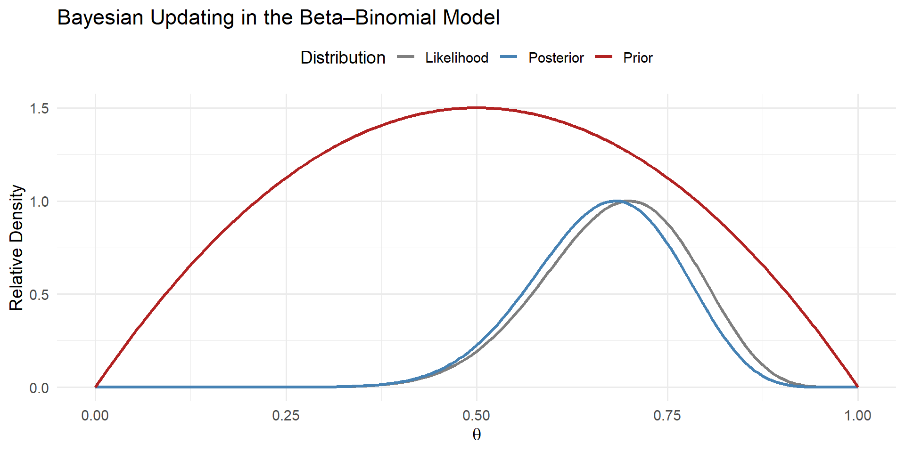

ECON 372 · Economics of Health Care Markets
Emory University
Consequences of physician agency:
Consequences of physician agency:
\[P(A|B) = \frac{P(B|A) \times P(A)}{P(B)}\]
We know from the setup that:
We can then update according to Bayes’ rule: \[Pr(D | P) =\frac{Pr(P| D) \times Pr(D)}{Pr(P)} = 0.99 * 0.01 / 0.0198 \approx 0.50\]
So even though the test is highly accurate, the low baseline probability means that a positive result still only implies a 50% probability of actually having the illness.
\[ P(\theta | y) = \frac{P(y | \theta) \times P(\theta)}{P(y)} \propto P(y | \theta) \times P(\theta) \]
Given prior beliefs about treatment quality, \(P(\theta\)), and observed outcomes \(y\), the physician updates their belief on the quality of treatment using:
\[\begin{align} P(\theta|y) &= \frac{P(y|\theta) \times P(\theta)}{P(y)} \\ & \propto P(y|\theta) \times P(\theta) \end{align}\]
\[P(y = s | n, \theta) = {n \choose s} \theta^{s} (1 - \theta)^{n - s}\]
\[P(\theta) = \frac{\theta^{\alpha-1} (1 - \theta)^{\beta-1} }{\tilde{B}(\alpha, \beta)},\] where \(\tilde{B}(\alpha, \beta)\) is a normalization constant to ensure the PDF integrates to 1.
\[ E[\theta] = \frac{\alpha}{\alpha + \beta}, \quad Var(\theta) = \frac{\alpha \beta}{(\alpha + \beta)^2 (\alpha + \beta + 1)}. \]
\[\begin{align} P(\theta | y) &= \frac{P(y| \theta) P(\theta)}{P(y)} \\ & = \frac{ {n \choose s} \theta^{s} (1 - \theta)^{n - s} \theta^{\alpha-1} (1 - \theta)^{\beta-1} } { \tilde{B}(\alpha, \beta) } \\ & = \frac{ {n \choose s} \theta^{\alpha+s-1} (1 - \theta)^{\beta+n-s-1} } { \tilde{B}(\alpha, \beta) } \\ & \propto Beta(\alpha+s, \beta + n - s) \end{align}\]

Figure 1: Diffuse Beta(2,2) prior distribution.

Figure 2: Binomial likelihood for 14 successes out of 20 trials.
With \(\alpha_0 = 2\) and \(\beta_0 = 2\), the posterior parameters become, \(\alpha_{1} = \alpha_{0} + s = 16\) and \(\beta_{1} = \beta_{0} + n - s = 8\).

Figure 3: Prior, likelihood, and posterior distributions.
A physician is evaluating the effectiveness of Treatment A for a certain medical condition. The physician treats 100 patients with Treatment A and observes that 70 patients show improvement.
Assumptions:
Prior Belief: The physician’s prior belief about the effectiveness of Treatment A follows a \(Beta(\alpha_{0}, \beta_{0})\) distribution, where \(\alpha_{0}=1\) and \(\beta_{0}=1\). These are the “shape” parameters of the Beta distribution. In this case, this represents a uniform prior, which can be considered a “diffuse” prior.
Observation: 70 out of 100 patients showed improvement following treatment (i.e., had a successful outcome)
Given the assumptions, the physician wants to update their belief about the effectiveness of Treatment A using the mean of the posterior distribution.
In this scenario, the physician’s updated belief for the mean effectiveness of treatment is approximately 0.6961, which aligns more closely with the actual mean of 70% based on the observed data and the diffuse prior belief. Because the physician’s initial belief (i.e., their prior) is not strong, they update their belief to almost perfectly match the observed data.
A physician is evaluating the effectiveness of Treatment A for a certain medical condition. The physician treats 100 patients with Treatment A and observes that 70 patients show improvement.
Assumptions:
Prior Belief: The physician’s prior belief about the effectiveness of Treatment A follows a \(Beta(\alpha_{0}, \beta_{0})\) distribution, where \(\alpha_{0}=1\) and \(\beta_{0}=20\). These are the “shape” parameters of the Beta distribution. In this case, this represents a strong prior on a low probability of success (i.e., the physician initially believes that the treatment is relatively ineffective)
Observation: 70 out of 100 patients showed improvement following treatment (i.e., had a successful outcome)
Given the assumptions, the physician wants to update their belief about the effectiveness of Treatment A using the mean of the posterior distribution.
In this scenario, the physician’s updated belief for the mean effectiveness of treatment is approximately 0.5868, which is much lower relative to the first case of a diffuse prior. Why is that?